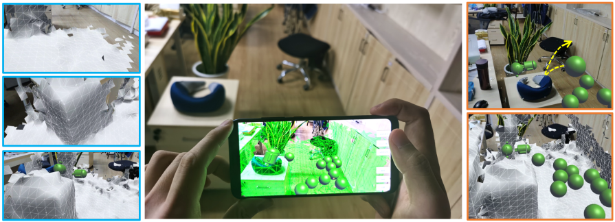
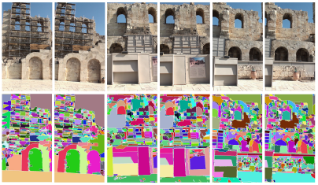
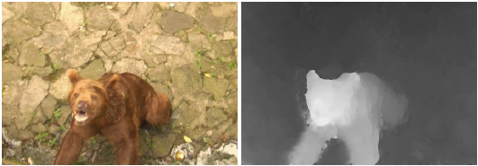
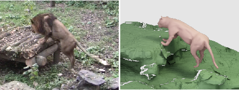

Publication

LIFE: Lighting Invariant Flow Estimation. (arXiv, 2021)
Zhaoyang Huang*, Xiaokun Pan*, Runsen Xu, Yan Xu, Kachun Cheung, Guofeng Zhang, Hongsheng Li(* denotes equal contributions)
Paper Project Page Code

VS-Net: Voting with Segmentation for Visual Localization. (CVPR, 2021)
Zhaoyang Huang*, Han Zhou*, Yijin Li, Bangbang Yang, Yan Xu, Xiaowei Zhou Hujun Bao, Guofeng Zhang, Hongsheng Li(* denotes equal contributions)
Paper Project Page Code

Mobile3DRecon: Real-time Monocular 3D Reconstruction on a Mobile Phone. IEEE Transactions on Visualization and Computer Graphics (TVCG), 26(12): 3446-3556, 2020
Xingbin Yang, Liyang Zhou, Hanqing Jiang, Zhongliang Tang, Yuanbo Wang, Hujun Bao, and Guofeng Zhang*
Best Paper Award of ISMAR 2020
Paper Project Page

Spatio-Temporal Video Segmentation of Static Scenes and Its Applications. IEEE Transactions on Multimedia, 17(1):3-15, 2015
Hanqing Jiang, Guofeng Zhang*, Huiyan Wang, and Hujun Bao
Paper Video Supplementary Doc

3D Reconstruction of Dynamic Scenes with Multiple Handheld Cameras. European Conference on Computer Vision (ECCV), 2012: 601-615
Hanqing Jiang, Haomin Liu, Ping Tan, Guofeng Zhang*, and Hujun Bao
Paper Video Supplementary Doc
Hanqing Jiang, Haomin Liu, Ping Tan, Guofeng Zhang*, and Hujun Bao
Paper Video Supplementary Doc
